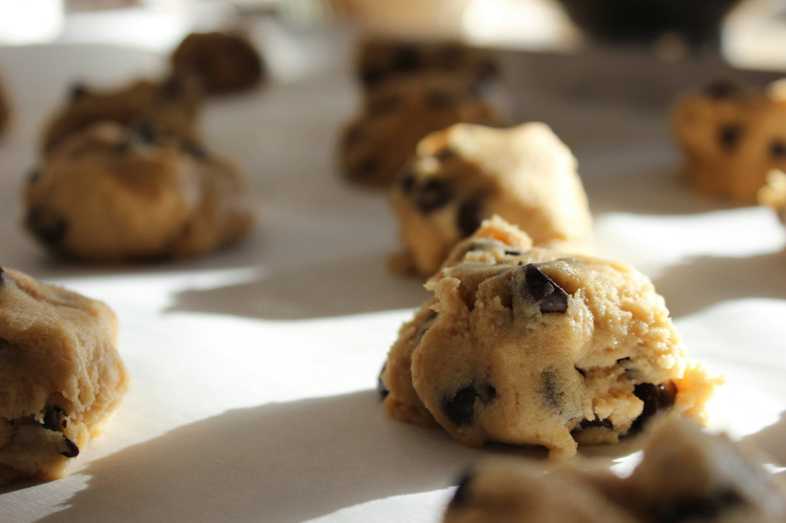

Why it comes out the same every time
Our mom spent years taking the guesswork out.
Michele is a chemical engineer by trade and a baker by heart. She kept running this recipe until it stopped depending on who was holding the spoon.
Everything she pinned down — the flour to the gram, the butter, the timing — is the part you no longer have to get right.